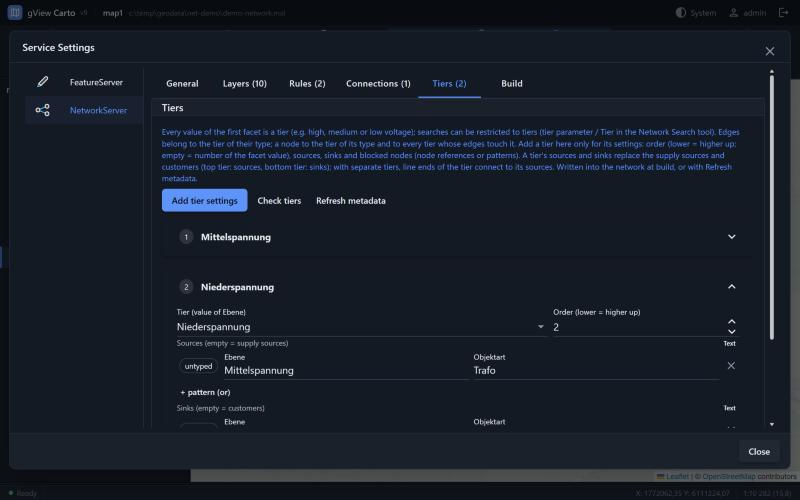
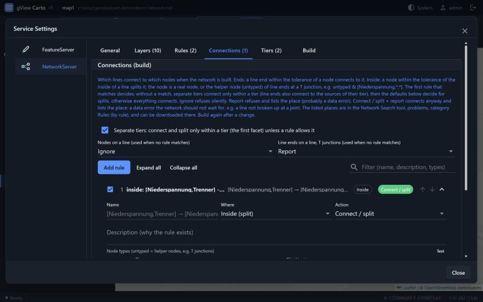

Netzwerke erstellen¶
Aus den Punkt- und Linien-Layern einer Karte baut gView Carto ein Netzwerk: einen Graphen aus Knoten und Kanten, auf dem der NetworkServer des Dienstes sucht (Trace, kürzester Weg, Versorgung, Ausfall, Prüfregeln). Diese Seite zeigt die Schritte in Carto an einem kleinen Beispielnetz: ein Umspannwerk, drei Mittelspannungsleitungen, zwei Trafos und dahinter ein Niederspannungsnetz mit Kästen, einem Trenner, Hausanschlüssen und Kunden. Die Konfiguration im Detail beschreibt Zugriff, Aufbau und Konfiguration.

Im Beispiel liegt eine Niederspannungsmuffe auf einem Stützpunkt einer Mittelspannungsleitung, und ein Hausanschluss endet auf einer Niederspannungsleitung (T-Stoß). Beides kommt in echten Daten oft vor, wenn die Ebenen von verschiedenen Abteilungen gepflegt werden; Schritt 3 zeigt, wie man damit umgeht.
1. Layer ins Netzwerk aufnehmen¶
Für jeden Layer, der zum Netz gehört: Kontextmenü des Layers, Layer Settings, Seite Network.

Layer takes part in the network: Punkt-Layer werden Knoten, Linien-Layer Kanten, ein Polygon-Layer kann die Shards (z. B. Ortsnetze) liefern.
Type: je Facette eine Vorlage, aus der der Typ jedes Objekts entsteht: ein fester Text, ein Feld
[EBENE],{layer-name},{group-name}(die Gruppe des Layers) oder{group-name:n}. Die erste Facette ist die Ebene (Tier), z. B. Mittelspannung oder Niederspannung: Wer je Ebene eine Gruppe im Inhaltsverzeichnis hat, nimmt dort{group-name}.Where, Länge, Richtung und der Normalschaltzustand (z. B. ein Feld, dessen Wert einen Trenner sperrt) sind optional.
Alternativ übernimmt Service Settings, NetworkServer, Tab Layers, Add all point and line layers alle Layer auf einmal.
2. Grundeinstellungen¶
Service Settings (in der Werkzeugleiste Map), links NetworkServer, Tab General:

Spatial reference: das metrische Koordinatensystem, in dem gebaut wird (leer: das der Karte).
Tolerance: Linienenden und Punkte, die näher beieinanderliegen, werden ein Knoten (Standard 0,01).
Points of different layers at one place: ein Fehler, oder der Layer weiter oben im Inhaltsverzeichnis gewinnt und die anderen werden Aliase (z. B. ein Kunde, der auf einem Kasten gezeichnet ist).
Supply: die Standard-Quellen und -Kunden für Versorgung und Ausfall, als Typmuster, z. B.
[Mittelspannung,Umspannwerk].Type facets und Weights: die Facetten (Ebene, Objektart, …) und weitere Gewichte neben der Länge.
3. Ebenen und Verbindungen¶
Jeder Wert der ersten Facette ist eine Ebene (Tier). Im Tab Tiers erhält eine Ebene ihre Einstellungen: Rang, Quellen, Senken und gesperrte Knoten. Die Quellen der Niederspannung sind die Trafos der Mittelspannung.

Im Tab Connections wird festgelegt, was beim Bauen verbunden und geteilt wird:

Separate tiers: verbunden und geteilt wird nur innerhalb einer Ebene. Die Niederspannungsmuffe auf der Mittelspannungsleitung teilt sie dann nicht mehr; Niederspannungsleitungen schließen an die Trafos an, weil diese Quellen ihrer Ebene sind.
Nodes on a line, Line ends on a line (T junctions): was gilt, wenn keine Regel passt. Im Beispiel teilt kein Knoten eine Linie (Ignore), T-Stöße werden gemeldet (Report).
Regeln: Die erste passende Regel gewinnt. Hier darf ein Trenner der Niederspannung eine Niederspannungsleitung teilen. Jede Regel ist ein Panel mit Kopfzeile (Häkchen = aktiv, Nummer, Name, Muster, Where und Action); aufgeklappt stehen Name, Description (warum es die Regel gibt) und die Muster. Der Schalter untyped einer Zeile wählt die Hilfsknoten (Linienenden ohne Punkt), z. B. für Regeln zu T-Stößen; Text zeigt das Muster als Text (
&und,!nicht). Mit den Pfeilen ändert man die Reihenfolge, das Filterfeld sucht in Name, Beschreibung und Typen.Action: Connect / split verbindet bzw. teilt, Ignore nicht, Report nicht und meldet die Stelle, Connect / split + report verbindet und meldet trotzdem (z. B. eine Linie, die an einer Muffe nicht aufgeteilt ist). Gemeldete Stellen zeigt das Werkzeug Network Search mit der Operation problems, Kategorie Rules.
Die Felder der Muster schlagen die Werte der Facetten vor. Wie die Entscheidung im Einzelnen fällt, steht unter Verbinden und Teilen beim Aufbau.
4. Prüfregeln¶
Im Tab Rules stehen Regeln, die Topologiefehler finden: Eine Regel zählt die direkten Nachbarn von Knoten oder Kanten und vergleicht die Anzahl mit Min und Max, auf Wunsch nur in einer Ebene. Die Kopfzeile zeigt Schweregrad (Error, Warning), Name, Muster und Beschreibung; aufgeklappt wird die Regel bearbeitet. Export rules/Import rules tauschen die Regeln als JSON-Datei aus.

Geprüft wird mit dem Werkzeug Network Search (Operation validate) oder mit gView.Cmd -u validate, nie beim
Bauen: Eine Regel mit einer unbekannten Ebene hält den Bau nicht auf, das Log warnt, und validate schlägt fehl, bis sie
korrigiert ist.
5. Bauen¶
Tab Build, Build network. Die Karte muss gespeichert sein: Das Netzwerk wird neben ihr abgelegt
({Karte}.network). Das Log zeigt die Anzahl der Knoten, Kanten und Shards, die Hinweise (z. B. SplitRefused für den
gemeldeten T-Stoß, OutsideShardRegions für Objekte außerhalb der Shard-Flächen) und die verwendeten Typen.
conflicts.json im Netzwerkverzeichnis listet Konflikte, wenn der Bau abbricht. Alle Berichte des Baus lassen sich mit
dem Werkzeug Network Search, Operation problems, in der Karte ansehen (siehe Netzwerk-Werkzeuge).

Unter JSON (gView.Cmd) lässt sich die Konfiguration exportieren und importieren, z. B. um mit
gView.Cmd --command Network -u build nachts zu bauen.
6. Suchen¶
Das Werkzeug Network Search (Werkzeugleiste Tools) sucht auf dem gebauten Netz: Operation wählen (trace, reach, path, supply, outage, feeders, info, validate, problems), Start mit Start in der Karte anklicken, Run. Unter Options schränkt Tiers die Suche auf Ebenen ein; ein Bereich (Area) begrenzt sie räumlich. Alle Operationen beschreibt Netzwerk-Werkzeuge.

Das Bild zeigt einen Trace vom Umspannwerk auf der Ebene Mittelspannung: Er erreicht die beiden Trafos, die Muffe der Niederspannung bleibt außen vor. Liegen an der angeklickten Stelle mehrere Knoten (getrennte Ebenen), wählt die Ebene den Knoten; ein weiterer Klick an dieselbe Stelle nimmt den nächsten.
7. Veröffentlichen¶
Wird die Karte als Dienst veröffentlicht, steht das Netzwerk als NetworkServer des Dienstes bereit, sobald es am Speicherort des Servers liegt (Build in der Server-Verwaltung, gView.Cmd oder kopiert). Zugriff, Speicherort und die REST-Operationen beschreibt Zugriff, Aufbau und Konfiguration.